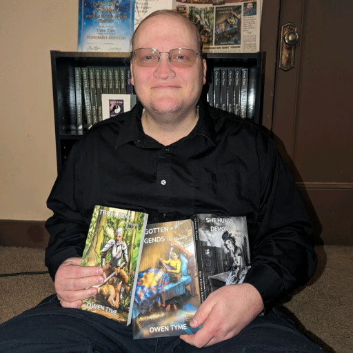

About Owen

Though he currently calls Liberal, Kansas home, Owen Tyme was born in the California Bay Area. He's come to enjoy the mild climate of Kansas. He's a member of the Church of Jesus Christ of Latter-Day Saints.
Owen prefers to write action-filled science fantasy, though he sometimes writes fantasy or science fiction, when the inspiration takes him there. He loves grounding what he writes in science, even when writing about dragons, witches and wizards.
His favorite authors include Terry Pratchett, R. A. Salvatore, Douglas Adams and Isaac Asimov. More recently, he's discovered a liking for Mercedes Lackey, as well. He loves novels grounded in scientific truth, but also loves a little flight of fancy. He especially loves it when the two work hand-in-hand, as in the works of Pratchett.